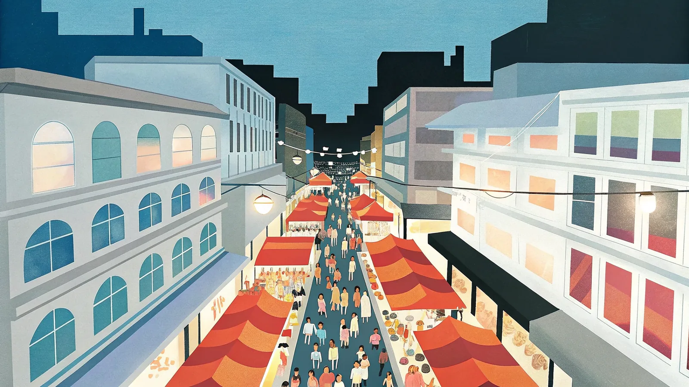
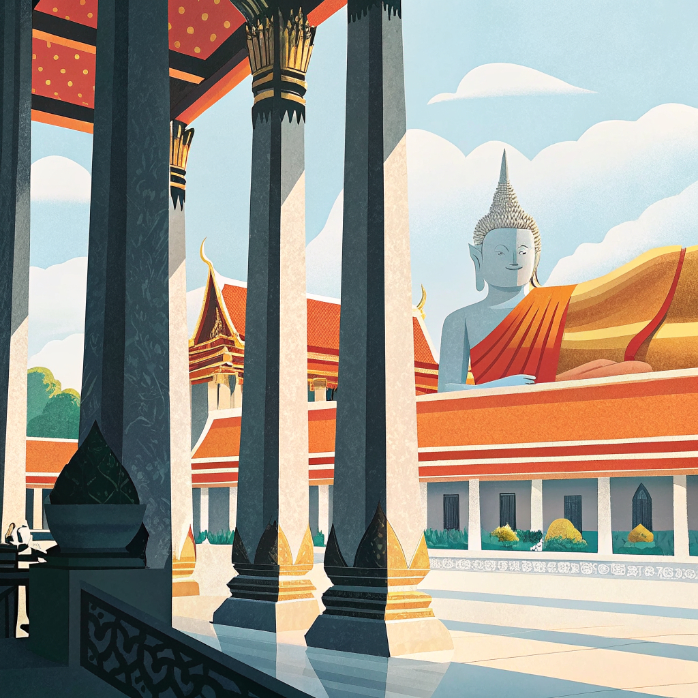
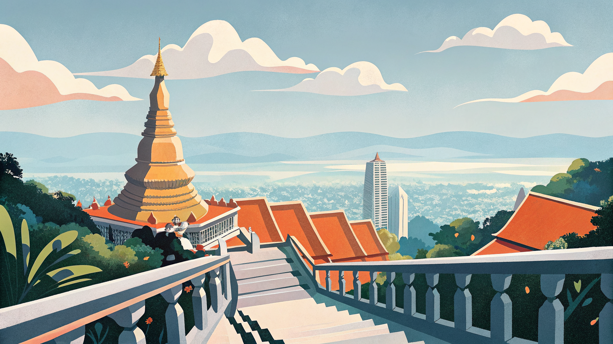
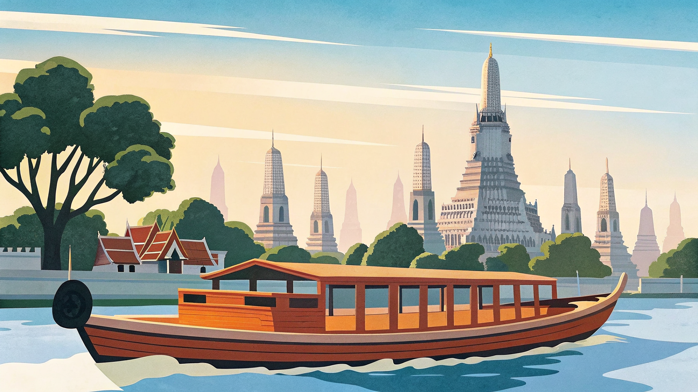
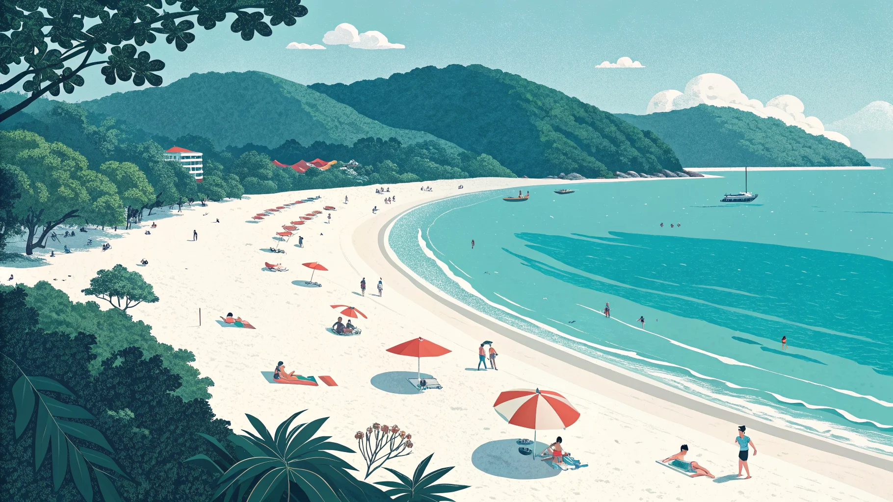

モデルコース
金色の寺院と屋台の匂いが交差するタイは、初めての東南アジアにもぴったりの国。アユタヤ遺跡も日帰りで巡れるバンコク連泊プラン、山の空気が心地いいチェンマイまで足を延ばす北部周遊プランがおすすめ。都市・山・ビーチを一気に味わいたい欲張りな人には、プーケットまで足を延ばす縦断ルートも紹介しています。
バンコク・アユタヤ 4泊5日バンコク連泊・移動ゼロ・スーツケースを動かす必要なし
Day 1
バンコク到着
スワンナプーム空港からエアポートレールリンクで約30分、市内へ。ホテルへ荷物を預けたらカオサン通りへ。世界中のバックパッカーが集まる通りで、屋台グルメをつまみながらバンコクの夜の空気を全身で感じよう。

Day 3
ワット・ポー → スクンビット観光午前中に
ワット・ポーで涅槃仏を拝観。寺院を出たら近くの町のマッサージ屋さんへ——院内より格段に安く、地元の人も通う本場の感覚が味わえる。午後はBTSでスクンビットへ移動。バンコク最大の繁華街で、ショッピングモール・屋台・
ルーフトップバーが集中するエリア。夜景を楽しんで締めくくる。

Day 5
帰国
午前中は最後の街歩きやお土産購入。スワンナプーム空港へ移動して帰国便へ。
バンコク ＋ チェンマイ 5泊6日荷物の移動は1回だけ
Day 5
ワット・ドイステープ → チェンマイ自由行動山頂の
ワット・ドイステープで朝の参拝。街を一望する絶景を楽しんだ後、
旧市街で
カオソーイランチ。午後はカフェ巡り・雑貨ショッピングでチェンマイの最後を満喫。

Day 6
チェンマイ最終日 → バンコク経由帰国便
最後の朝市で朝ごはん。チェンマイ空港からバンコク経由で帰国便へ、または直行便があれば直接帰国。
欲張りバックパッカー向けに、管理人がモデルコースを作ってみました。バンコクの都市・チェンマイの自然・プーケットのビーチと、タイの魅力を一度の旅で欲張りたい人向けのルートです。タイは国土が広く南北で文化も気候も全然違う。それを1回の旅で体感することが、この縦断ルートの醍醐味です。
バンコク・チェンマイ・プーケット 6泊7日体力勝負
Day 1
バンコク到着直行便で約6時間。深夜便なら翌朝到着、そのままホテルに荷物を預けて
ワット・プラケオへ直行。観光後
カオサン通りで屋台グルメを食べ、バンコクの熱気を肌で感じる。

Day 2
バンコク観光 → 夜行バスで北へワット・ポー・
ワット・アルンを巡った後、BTSでスクンビットへ。夕食を済ませてモーチット北バスターミナルへ。夜行バスに乗り込み、そのまま北を目指す。

Day 4
エレファントサンクチュアリ半日ツアーで
エレファントサンクチュアリで象と触れ合い。午後は
ワット・ドイステープへ（ソンテウで30分）。山頂からチェンマイ市街を一望し、夕日が沈む時間帯が一番美しい。夜はローカル食堂で地元の人と同じものを食べる。
Day 5
プーケット移動・到着午前の便でプーケットへ。チェンマイの涼しさから一転、南国の熱気に包まれる。ホテルへチェックインしたらそのまま
パトンビーチへ。夕暮れのビーチで海を眺めながら飲む一杯が最高。

Day 7
帰国
プーケット空港から帰国便へ。南国の風を胸に焼き付けて日本へ。